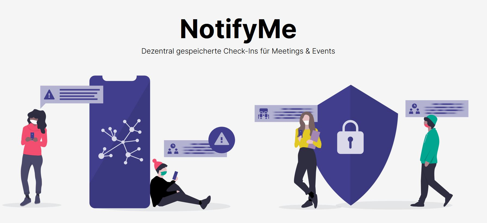

Die Corona-Warn-App
vonStefan Leibfarth
am CyberMonday
der vhs SüdOst
12.04.2021
Was ist der Chaos Computer Club e.V. (CCC) ?
- größte europäische HackerInnen-Vereinigung
- Gründung: 1981
- Grundlage: Hackerethik
- Vermittelnde im Spannungsfeld technischer und sozialer Entwicklungen
- Veranstaltungen, Politikberatung, PMs, Publikationen, ...
- Regelmäßig als ExpertInnen beim BVerfG, BT-Ausschüssen, ...
In Stuttgart:
Stammtische, Vortragsreihe, Workshops, Cryptoparties, CmS...
Mehr auf www.cccs.de
DISCLAIMER
Meinung des Referenten ist nicht notwendigerweise die des CCC(S)+
App wird ständig weiter entwickelt, diese Präsention altert schnell

Quelle: Gies/Chr. Höver & Sohn
Contact-Tracing allgemein
- Ziel: Infektionsketten unterbrechen
- Immerhoch: Handarbeit der lokalen Gesundheitsämter
- Nachteil: Kontakte oft nicht namentlich bekannt (absichtlich und unabsíchtlich)
Die Corona-Warn-App
Quelle: https://www.bundesregierung.de/breg-de/themen/corona-warn-app
Mögliche technische Umsetzung
Kontakt-Zuordnung mittels:
- GPS
- Funkzellen
- Ultraschall
- Bluetooth (LE)
Gretchenfrage
Wo findet die relevanten Datenverarbeitung statt?Quelle: blockruption.com
Nichts geht ohne
Quelle: Apple und Google arbeiten zusammen an Technologien zur Kontaktverfolgung bei COVID-19
Infrastruktur und App
Bild-Quelle: ZDF
App und Infrastruktur
Vollständige Dokumenation auf Github
Open Source
Funktionsweise
Gerät sendet wechselnde Zufallskennung
Bild-Quelle: Google
Funktionsweise
Austausch im Hintergrund
Bild-Quelle: Google
Funktionsweise
Abgleich der Infizierten-Codes mit eigener Liste
Bild-Quelle: Google
Funktionsweise
Bei Treffer wird NutzerIn benachrichtigt
Bild-Quelle: Google
Kritik
- Zu wenig positiv Getestete informieren ihre Kontakte (nur ca. 60%)
- Immer noch nicht alle Labore angebunden (nur ca. 92%)
- Zu langsame Weiter-Entwicklung
Ausblick
Check-Ins für Meetings & Events Bild-Quelle: notify-me.ch
Fazit
- Ziel: Schutz von Mitmenschen (wie Alltagsmaske)
- Nutzen: Vorhanden, aber keine App besiegt eine Pandemie
- Nachteile: Vernachlässigbar
- Installieren? Ihre Entscheidung!